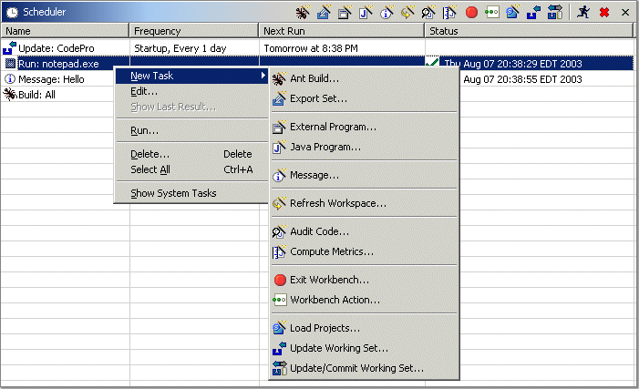
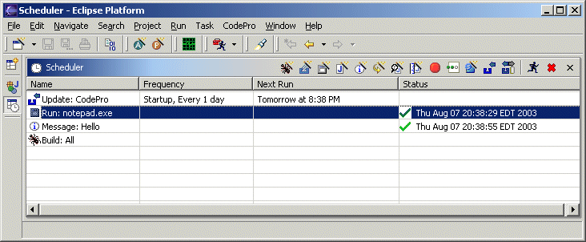
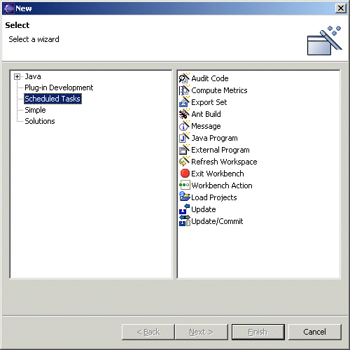
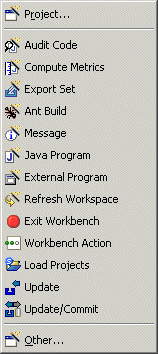
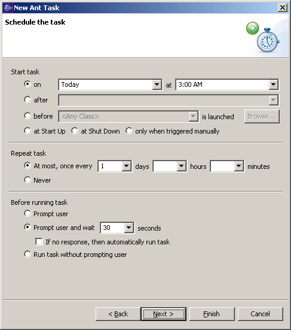
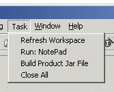

Scheduler

The CodePro Task Scheduler provides a facility for scheduling various tasks to occur at startup, at shutdown, at scheduled times or in response to specific events. The Scheduler view may be accessed in several ways - as part of the Resource, Java, Debug, Team or VA Java perspectives or within its own "Scheduler" perspective.

Currently, there are twelve task types that may be instantiated:
 Export Set - automate
export operations and your build process.
Export Set - automate
export operations and your build process. Ant Build - configure and run an Ant
build.
Ant Build - configure and run an Ant
build.Message - trigger an arbitrary, multi-line message to popup.
Java Program - run any Java program within your workspace (either in normal mode or debug mode). This gives you an easy way, for example, to trigger some Java script at system startup.
External Program - trigger any external executable or batch file (actually any command line).
Refresh Workspace - refresh the workspace (similar to what the -refresh command line option does). It will also scan for and recognize and new Eclipse projects that were created externally to Eclipse (either by hand or via VA Assist when Eclipse was not running).
Audit Code - generate a code audit report for a set of resources.
Compute Metrics - generate a metrics report for a set of resources.
Exit Workbench - exit the workbench while optionally saving or discarding any unsaved resources.
Workbench Action - run any arbitrary workbench action.
 Load Projects - load a set of
projects out of the repository.
Load Projects - load a set of
projects out of the repository.
The status column has the following icons indicating the current state of the scheduled task:
- the scheduled task is currently running.
- the scheduled task has completed normally.
- the scheduled task has completed normally and there are results available. The results can be displayed by selecting "Show Last Results..." in the context menu, or ALT-double-click on the task itself.
- the scheduled task was canceled before it could complete.
- there was an exception during task execution. The exception details can be displayed by selecting "Show Last Results..." in the context menu, or ALT-double-click on the task itself.
blank - the scheduled task has not been run during the current workbench session.
Scheduling a new task
To schedule a new task, select "New Task" from the popup menu of the scheduler view and then select the type of task to be scheduled. This opens the scheduler wizard, displaying the wizard pages specific to that type of task. New tasks can be created via the standard New wizard by selecting the "Scheduler Tasks" category, or via the popup menus or toolbar within the Scheduler view itself.
 
Tasks may be scheduled to run at a specific time with a specific interval, at startup, at shutdown, after another task, or before a specific class is launched. When triggered, the tasks can prompt the user to continue or not.

Clicking on the "Show task in Task menu" will cause the task to be added to the top level "Task" menu. This provides a convenient way to access common tasks.

Edit an existing task
To edit an existing task, select the task in the scheduler view, then select "Edit" from the popup menu. Alternately, double click on the task in the scheduler view. Either method causes the scheduler wizard to be opened showing the details of the selected task.
Run a task
In addition to a task automatically running at a specified time, you can run a task immediately by selecting "Run" in the popup menu. This executes the task immediately without altering the next time that the task is scheduled to run.
Deleting a task
To permanently remove a task from the scheduler view, select the task in the scheduler view and then select "Delete" in the popup menu.
Early Startup
In order for these tasks to be executed at the appropriate times, the scheduler must be loaded and executed when Eclipse is launched.